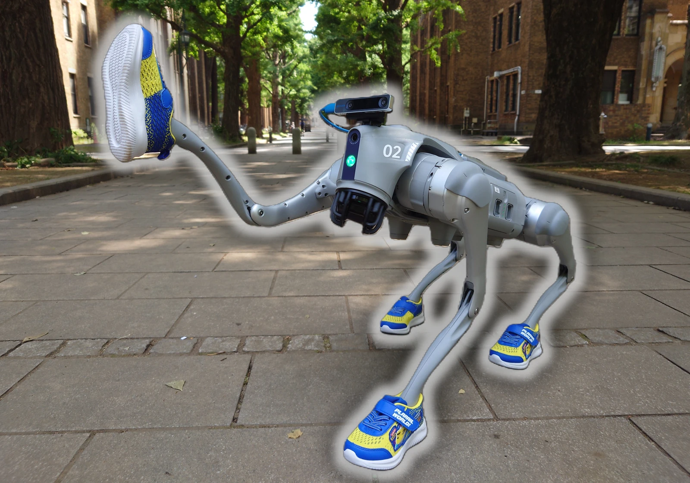
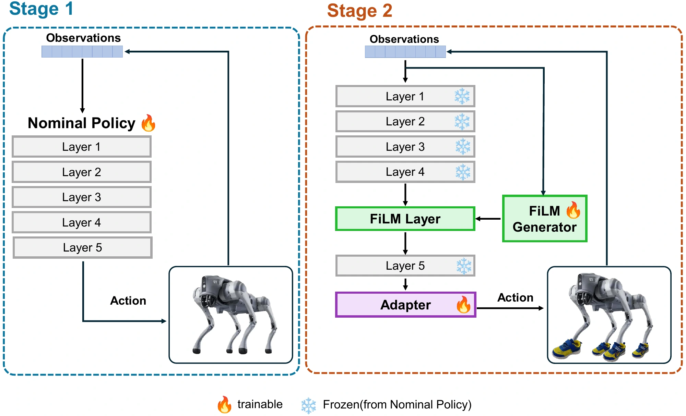
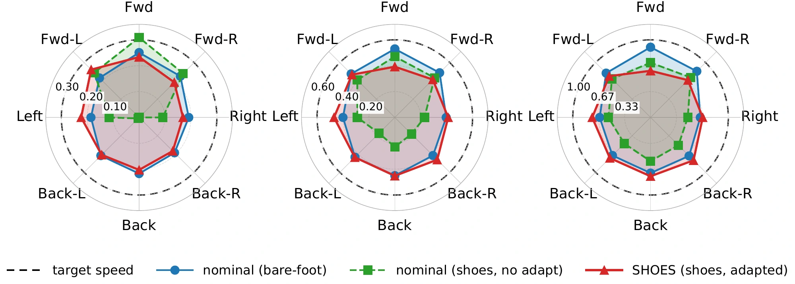
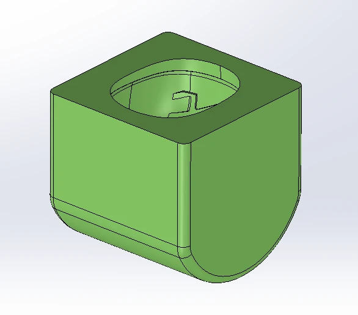
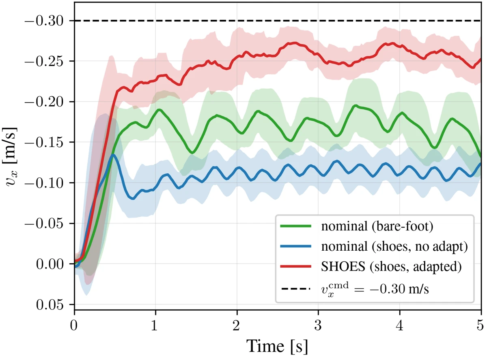
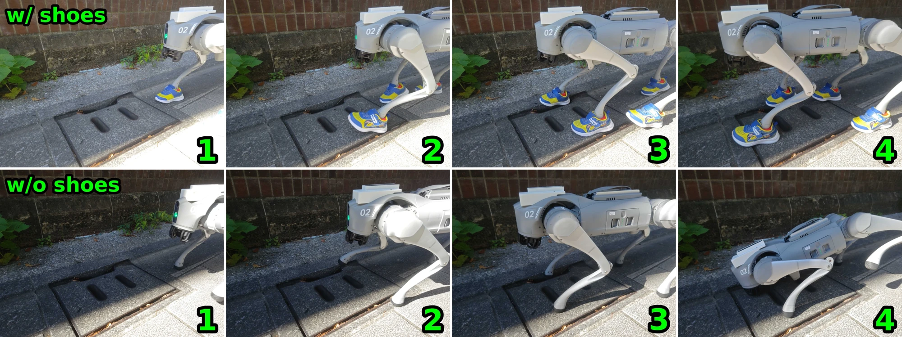

Learn to walk barefoot.
First, train the bare-foot robot to follow velocity commands in simulation using PPO. This nominal policy provides the basic walking skills that will be reused when the robot wears new footwear.
Accepted at CoRL 2026
Humans expand their locomotion capability by wearing appropriate footwear, such as hiking boots for mountains or skates for ice. Footwear changes the ground-contact interface and enables traversal of otherwise difficult terrain. In contrast, locomotion controllers are typically trained for a fixed morphology, and their performance can degrade when shoes alter foot geometry, mass, and friction. We propose SHOES, a sample-efficient framework for adapting locomotion policies to footwear-induced morphology changes. SHOES freezes a simulation-trained nominal policy and fine-tunes only lightweight, identity-initialized modulation modules on the robot, preserving the initial behavior while enabling efficient hardware adaptation. We also introduce SafeBox, a workspace-aware waypoint sampler that constrains online adaptation within a user-defined workspace. The simulation results with a shoe-equipped Unitree Go2 show that SHOES substantially recovers locomotion performance after footwear-induced morphology changes using limited additional adaptation. Under the same adaptation budget, SHOES outperforms FiLM-only, Linear Adapter-only, and residual-RL baselines. Real-world experiments on a Unitree Go2 fitted with human shoes further evaluate the effectiveness of SHOES for hardware deployment.

Bare-Foot Parity after adaptation
± 3.9% · flat shoes · six seedsTrainable adaptation parameters
Robot interaction for adaptation
People change shoes to go further. Robots need to adapt their control, too.
Shoes change contact geometry, mass, friction, and the effective shape of a robot’s legs. A controller trained for bare feet can lose much of its tracking performance when shoes are attached.
Footwear-aware domain randomization requires defining the range of shoe-induced contact changes in advance. SHOES adapts after the shoes are attached, using reinforcement learning directly on the real robot—without requiring a predefined randomization distribution for the new footwear. It is complementary to domain randomization and can also adapt a DR-trained policy.
SHOES preserves the simulation-trained policy and learns only small, identity-initialized adaptation modules. Together with SafeBox, a workspace-aware waypoint sampler, this enables efficient online adaptation on a shoe-equipped Unitree Go2.
First, train the bare-foot robot to follow velocity commands in simulation using PPO. This nominal policy provides the basic walking skills that will be reused when the robot wears new footwear.
After attaching shoes, keep the nominal policy fixed and train only the small FiLM and Linear Adapter modules with PPO on the robot. These modules learn to compensate for the changed contact dynamics, with velocity tracking as the adaptation objective.

FiLM uses the robot’s current observations to adjust the scale and offset of the policy’s internal features. This makes the correction depend on the robot’s state, while bounds limit how much those features can change.
The Linear Adapter applies a learned linear transformation and offset to the policy’s action output. It captures consistent corrections, such as a leg-height bias caused by footwear, while FiLM handles changes that depend on the robot’s state.
Both modules initially leave their inputs unchanged, so adding them preserves the nominal actor’s output exactly. Adaptation therefore starts from the existing walking behavior, and PPO gradually learns the corrections needed for the new shoes.
Evaluated across 3 speeds × 8 directions.
Same 30k-step adaptation budget.
Bare-Foot Parity (BFP) on flat shoes
Mean ± standard deviation over six seeds. BFP measures commanded-direction velocity relative to the bare-foot reference (100%).
Gain in Bare-Foot Parity
over the no-adaptation nominal.


Bare-Foot Parity after 30k steps; 100% is the bare-foot reference.
At a −0.30 m/s backward command, the nominal policy with shoes tracks at approximately −0.10 m/s. After adaptation, SHOES reaches approximately −0.25 m/s.
lower steady-state tracking error
0.20 → 0.05 m/s in this backward test


@inproceedings{tsuruhara2026shoes,
title = {SHOES: Sim-to-real Hardware-adaptation via On-policy Expansion of Skills for Legged Robots},
author = {Tsuruhara, Kota and Chen, Tsung-Yuan and Kawaharazuka, Kento},
booktitle = {Conference on Robot Learning (CoRL)},
year = {2026}
}